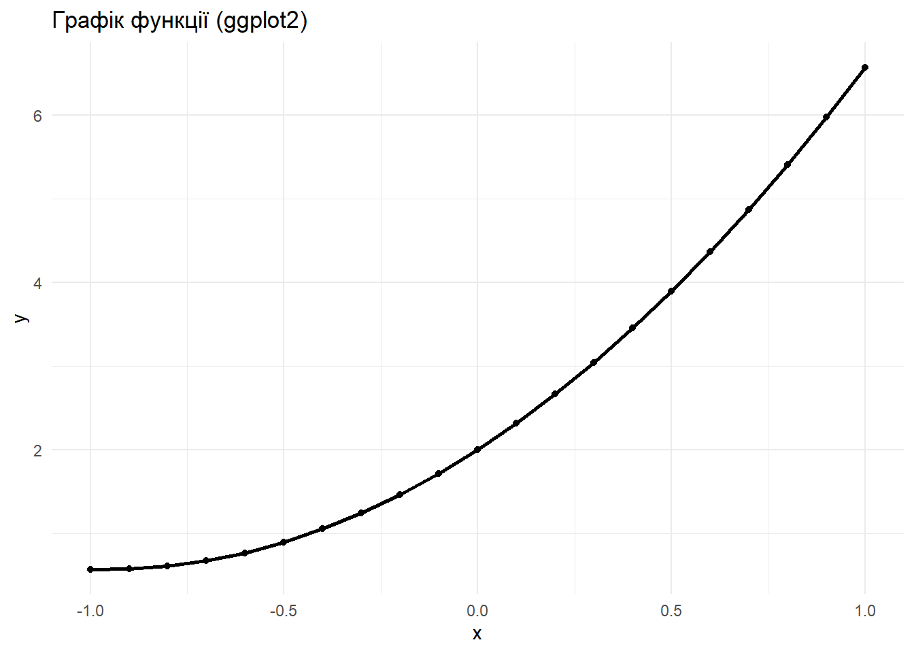

2.3.Виконуємо імпорт даних із файлу і візуалізацію у вигляді таблиці.
dfNew <-import("data/data.csv") # Таблиця засобами knitr knitr::kable(head(dfNew), caption ="_Табл. 1. Фрагмент таблиці даних_")
Табл. 1. Фрагмент таблиці даних
x
y
-1.0
0.5700
-0.9
0.5717
-0.8
0.6048
-0.7
0.6693
-0.6
0.7652
-0.5
0.8925
Табл. 2. Параметри функції
Параметр
Значення
b0
2
b1
3
b2
1.57
x1
-1
x2
1
3.Використання ggplot2 і оператора %>% (оптимізований код)
3.1
# Встановлення пакетів при першому запуску# install.packages(c("ggplot2", "dplyr"))library(dplyr)library(ggplot2)df %>%ggplot(aes(x = x, y = y)) +geom_line(size =1) +geom_point() +labs(title ="Графік функції (ggplot2)",x ="x", y ="y") +theme_minimal()
Warning: Using `size` aesthetic for lines was deprecated in ggplot2 3.4.0.
ℹ Please use `linewidth` instead.

3.2. Результуюча таблиця параметрів
Табл. 2. Параметри функції
Параметр
Значення
b0
2
b1
3
b2
1.57
x1
-1
x2
1
Контрольні запитання
1. LaTeX — формула щільності нормального розподілу
2. Як розв’язати таблиці і графіки в електронний документ з використанням R Markdown і пакету rmarkdown з оглядом на читабельність та грамотність коду?
Для великих таблиць — DT::datatable() (інтерактивна, сортування/фільтрація).
Поради щодо структури коду:
Розбивай код на логічні чанки: підготовка даних → аналіз → вивід таблиць → побудова графіків.
Коментуй нетривіальні кроки (коротко).
Використовуй echo=FALSE для чанків, де показ коду не потрібен (залиш тільки результат).
Для великих обчислень застосовуй cache=TRUE в чанку, щоб уникнути повторних довгих обчислень.
Зберігай стилі коду (відступи, однакові назви змінних).
3. Як вирішити завдання зі вставленням та форматуванням зображень в електронному документі з використанням R, забезпечуючи читабельність та елегантність коду?